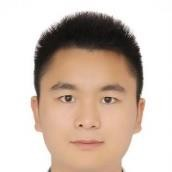
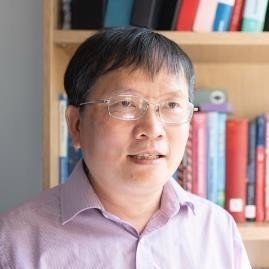

About Us
A reliable, stable, efficient renewable energy ecosystem.
That’s the vision. PowerSense was founded in Cambridge, UK, to get renewable infrastructure out of the era of passive maintenance — and we’re building the platform to do it.
Our story
Born in the lab, proven offshore
PowerSense grew out of more than seven years of research on renewable energy modelling and physics-informed machine learning at the University of Cambridge. Watching wind farm operators spend fortunes on corrective call-outs — because their monitoring systems could only raise alarms after a fault — we knew the research could do better.
So we built it: an intelligent O&M software platform that monitors health conditions, predicts potential failures, evaluates remaining lifetime and optimises maintenance schedules, using only the sensor signals equipment already produces.
The prototype was validated on a commercial offshore wind farm in collaboration with ORE Catapult, detecting three times more potential faults than the existing system and preventing one catastrophic failure. Today we’re expanding the same engine across the renewable energy ecosystem — wind, grid, EV and beyond.
The team
Deep research, deployed products
Strong R&D capability in electrical, mechanical and machine learning — plus the technology stack and engineers to ship real AI products.
Dr Borong Hu
Founder & CEO
Postdoc in Power Electronics at the University of Cambridge. Ten years developing innovative technologies for the renewable energy industry, working with GE, Siemens Gamesa, ORE Catapult and State Grid of China.
Taiyi Wang
Co-Founder & CTO
PhD in machine learning from the University of Cambridge. Experienced in AI-enhanced optimal control and machine learning for industrial services; previously a product manager at Baidu’s Big Data Group.

Dr Meng Rao
COO
PhD in mechanical fault diagnosis from the University of Alberta, Canada. Eight years of R&D on field-deployed O&M and diagnostic platforms for industrial assets.
Chi Zhang
Software Developer
MSc in signal processing from the University of Edinburgh. Has led multidisciplinary teams delivering machine learning applications with tens of thousands of daily active users.
Advisors
Guided by the field’s best
Prof Teng Long
Technology Advisor
Professor of Power Electronics at the University of Cambridge; Chairman of Epic Power Ltd.

Prof Li Ran
Technology Advisor
Professor of Power Electronics at the University of Warwick; IEEE Fellow.
Dr Chong Ng
Business Advisor
Associate Director of Applied Research at ORE Catapult; Non-Executive Director of the Tus-OREC Research Centre.